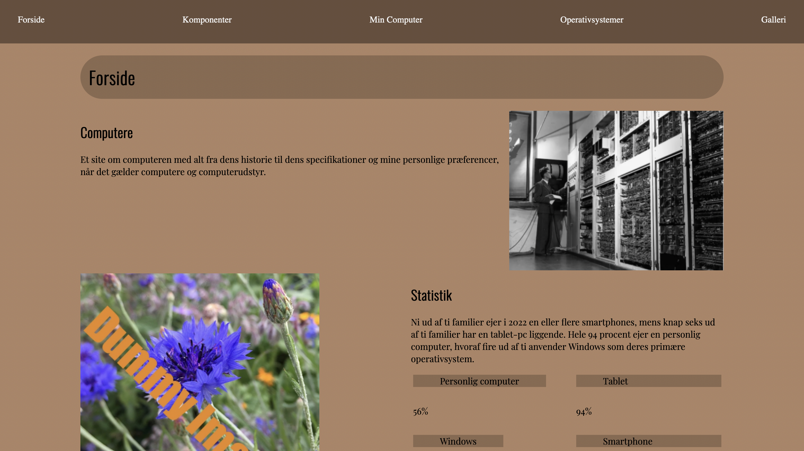

TEMA 2
Grundlæggende Web
I dette tema lærte vi om de grundlæggende principper der ligger bag processen for design af digitale brugergrænse overflader. Dette gælder det visuelle designet heraf i XD, mere specifikt blev vi bekendte med begreber som: wireframes, moodboard, styletile og udarbejdelse af prototype. Dernæst indholdsproduktion såsom tekst og billeder. Vi har arbejdet med grafik og billedbehandling i photoshop. Herigennem har vi tillært os færdigheder indenfor billedbeskæring, redigering, filformater og eksportering. Ved implementering af billeder på et website til konventionel brug, er det også nødvendigt at kende til ophaveret.
Vi tog derudover også hul på Visual Studio (VS) med introduktion til opsætning af html og css. Vi blev klogere på at arbejde ud fra princippet mobile-frist, ved brug af media queries. Derudover kendskab til grid og flex, som næst efter indhold er en bærende del af et website og de tanker man ligger bag når man udtænker sit layout. Efter at have anskaffet eget domæne, udarbejdet vores første websites, fulgte også introduktion til html-/css-validering, samt developer tools i Firefox og/eller Chrome. Til slut overførelse af opgaveløsninger til FileZilla, sådan at vi fremadrettet formår at uploade til på eget domæne.
02.01.02
Website

I denne opgave skulle vi selvstændigt udarbejdet et website ud fra nogle udleverede wireframes og layourdiagram. Der skulle indgå farver i designet og to typer fonte, det skulle indeholde et generelt css og layout css. Til slut skulle siden valideres - uden fejl men warnings var tilladt. Websitet måtte ikke kunne indekseres, derfor skulle der benyttes meta kode i head-elementet.
Det var en af de første opgaver hvor vi med vores nye tillærte viden, og udleveret materiale kunne få det til at ligne en hjemmesiden, som var stylet en smule.
Det største udfordring og primære læring i denne proces var brugen af grid. Dette kræver at man forstå opbygningen af columns og rows, samt de forskellige properties hertil for at kunne navigerer sine elementer rundt på sitet. Jeg oplevede at det blev nemmere at forstå opsætningen af et site ved netop at tænke i kasser. Her er layourdiagrammer en stor hjælp for at klarlægge strukturen.
02.02.01
Emnesite
Ud fra et valg frit emne skulle vi designe og kode vores eget site på 2-6 html sider. Vi skulle udvælge en stil og sætte os ind i principperne som denne benytter sig af. Næste step i design processes foregik i XD med udarbejdelse af moodboard, wireframes og styletile. Som en del af opgaven skulle siden have et favicon. Undervejs i forløbet dokumenterede vi vores egen proces, og disse var lagt ind som delafleveringer på fronter. Dette med billeder, screendumps og skriftlige beskrivelser for vores valg.
Denne opgave var den første hvor vi helt selv kunne bestemme emne og designet for sitet. Jeg valgte retro stil, da jeg med mit emne, linoleumstryk, fandt det passende at et manuelt håndarbejde, blev præsenteret med en side der gav samme indtryk. Den udfordrende del var, at vi netop stod mere på egen hånd ift. at vise vi havde forstået ideudvikling og designprocessen. Men det gav kun mere blod på tanden at opleve det lykkedes at komme i mål med sit ønskede udtryk.